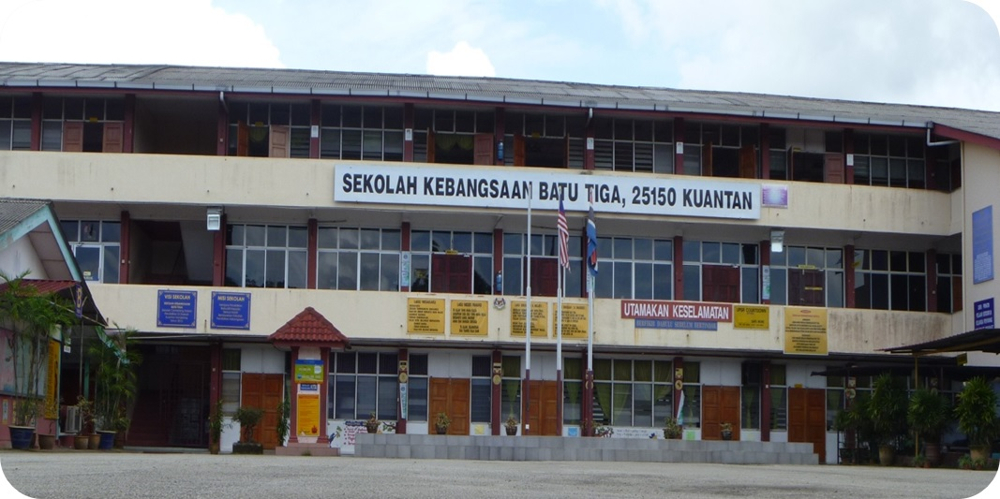

| Picture |
Year |
Summary |
|  |
2011~2017 |
This is where my journey of learning began. I not only attended primary school, but also pre-school here. I have created many memories in this school. No matter how bitter or sweet, everything is in my memory. I will never forget the friends I have made along the way. However, everyone starts to choose their own path after going to secondary school. |
 Visit SEMURNI Blog Visit SEMURNI Blog |
2018~2022 |
When I entered high school, I could feel the atmosphere there was different but I wasn't sure what it was. At first, I still hung out with my friends from elementary school but over time some of them changed schools and some of them had their own groups of friends. Here I realized that not everyone we knew well would stay with us until the end and I also had my own new friends. If I accidentally bumped into them anywhere, I would definitely say hello to them. |
 Visit UiTM Website Visit UiTM Website |
2023~Now |
When I was accepted to university, I felt very excited and nervous. Excited to get the same field as my friends and nervous to have to be away from my family. This was the first time I felt far from home and had to be independent especially in terms of expenses. There, I no longer cared about how many friends I had. I thought more about how to communicate with people around me better because that was the only problem I still had to solve. |